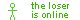
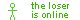

Welcome!
hiii, my name is Hayden!!
 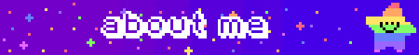
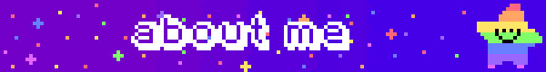
My birthday is September 2nd which I patiently await for so even more time can uncontrollably pass.
I am 21 years old and I am a Virgo. I'm also an INFP
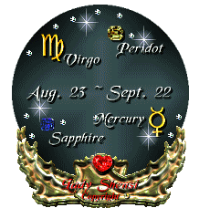I am currently studying business with a focus on management information systems but that is certainly going.
I know how to play the french horn! I've been doing it since middle school and plan on continuing to play throughout the rest of college
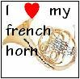I love raccoons very much and I hope to one day have one, all I need is a license to own it and my place
I am a huge fan of Garfield, I wish my wallet could handle the price of old Garfield merch however I cope with 700+ pictures of garfield on my phone
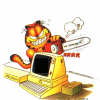 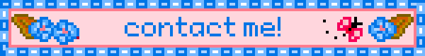i've never actually had any online friends except some people i played minecraft with years ago and are no longer in touch with
i would love to try and make some so if i seem like an interesting person, you should definitely reach out to me :)
- probably the best way to get in contact with me is through discord!
- haydenredacted
my favorite genre of music is probably indie rock according to last.fm, though I still do listen to lots of other stuff such as jazz, OSTs, and punk
my favorite band of all time is definitely Los Campesinos!
they're an indie rock band from Wales and i definitely recommend you listen to them! i'd start out with either hello sadness or hold on now, youngster
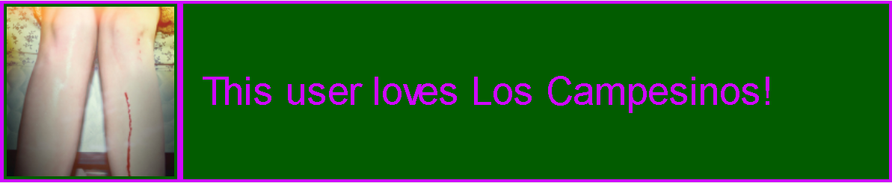here's my the link to my spotify profile and here's the link to my last.fm profile
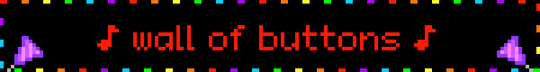(zoom in for the best effect)


 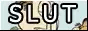
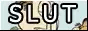


 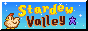
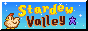


 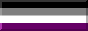
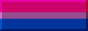
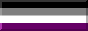
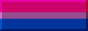